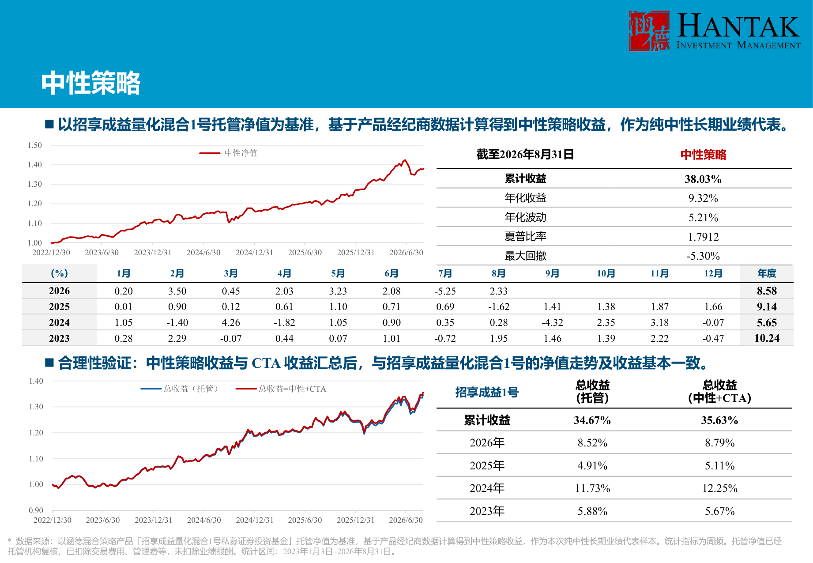
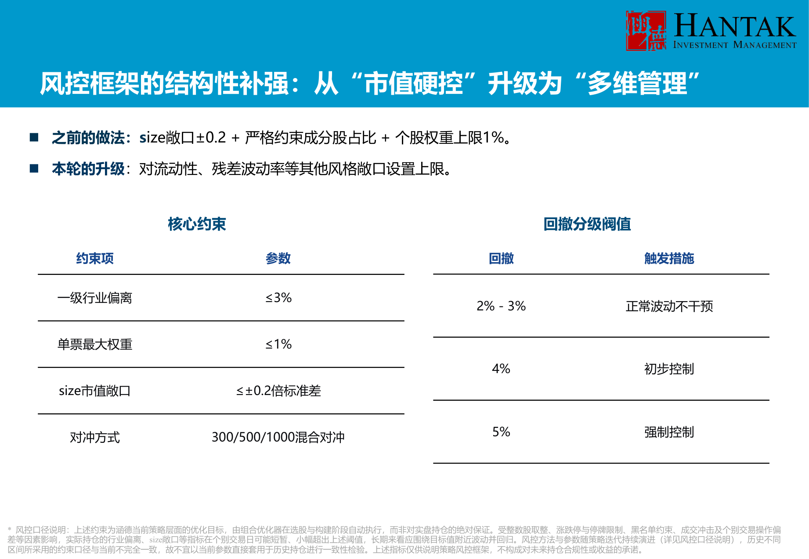
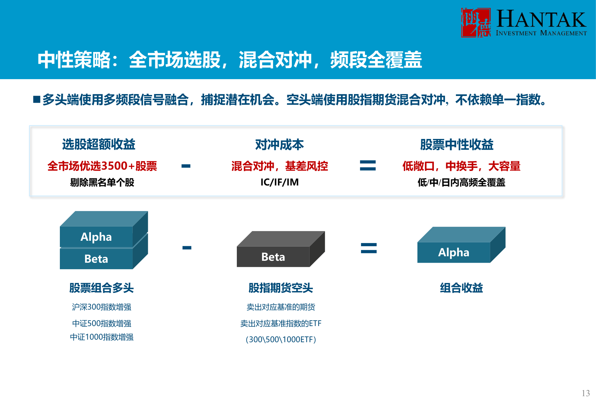
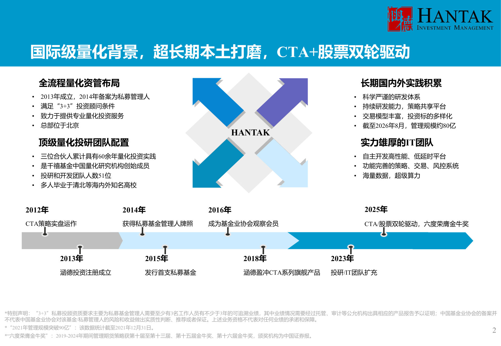
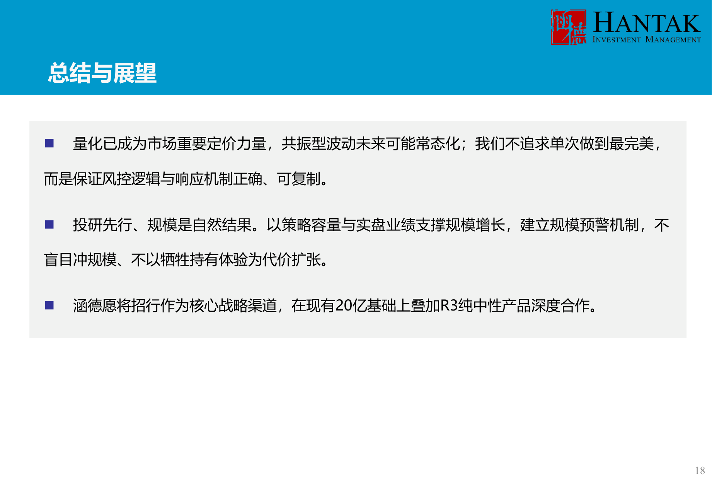

招行上会 PPT · 关键页
只摘老板要看的页：中性业绩、7 月风控补强、团队/积累。完整 PPT 明天更新后发。
内部阅示 · 请勿外传
P15｜中性策略：本次纯中性样本
38.03% / 9.32% / 5.21% / 1.79 / -5.30%（2023.1–2026.8，周频托管复核）；对账 35.63% vs 34.67%。本页与 V9 8/31 一致。

P18｜风控框架补强：从“市值硬控”到“多维管理”
7 月后对流动性/残差波动率设上限；size 一直 ±0.2；集中度 1%→0.5–0.3% 是 7 月临时压降，8 月底调回。完整 7 月归因见上会手册附录 A。

P14｜中性策略原理：只承担筛选过的 Alpha 风险
中性不是不承担风险，而是只承担经过筛选的 Alpha 风险；净值仍会波动，也会经历回撤。

P3｜14 年量化积累（2012 起步 / 2013 成立）
公司成立 13 年（2013-08-28）；团队 2012 年起做 CTA，14 年量化积累；未发生重大风险事件。

P19｜总结与展望：风控前置、投研先行
量化已是重要定价力量；不追求单次最完美，保证风控逻辑与响应机制可复制；投研先行、规模是自然结果。

为什么没放 P17“四重叠加”？该页还是旧版口径（“流动性/波动率仅软约束”），与 V9 的“7 月后 0.6 硬顶”容易打架。明天 PPT 更新时按 09 清单改成 V9 三因版：① 市场波动放大；② 风格因子共振；③ 极端行情 Pure Alpha 也回撤；并把“软控”写成“7 月前仅软约束、7 月后加 0.6 硬顶”。改完我再替换本页。
P4 团队页/P5 规模页暂不放：PPT 写投研 53 人、80 亿/72 人，V9 是投研 IT 51/68、72 亿（剔除嵌套）；明天统一成“51/68、72 亿；含嵌套约 80 亿/全口径 72 人”后再放。
2026-10-24｜丁一｜图片来源：招行上会 PPT（8/31 版）｜内部材料
返回材料包 · 上会手册